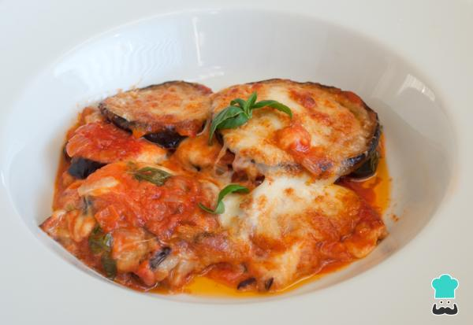

Lasaña de vegetalesLasaña vegetal con capas de pasta, espinacas, berenjenas, tomate y queso gratinado. Sabores ricos, texturas variadas, deleite vegetariano reconfortante. Ver receta |
Berenjenas gratinadasBerenjenas gratinadas: rodajas tiernas, bañadas en salsa de tomate, queso fundido. Delicia vegetal, capas suculentas, un festín gratificante para el paladar. Ver receta |
 |